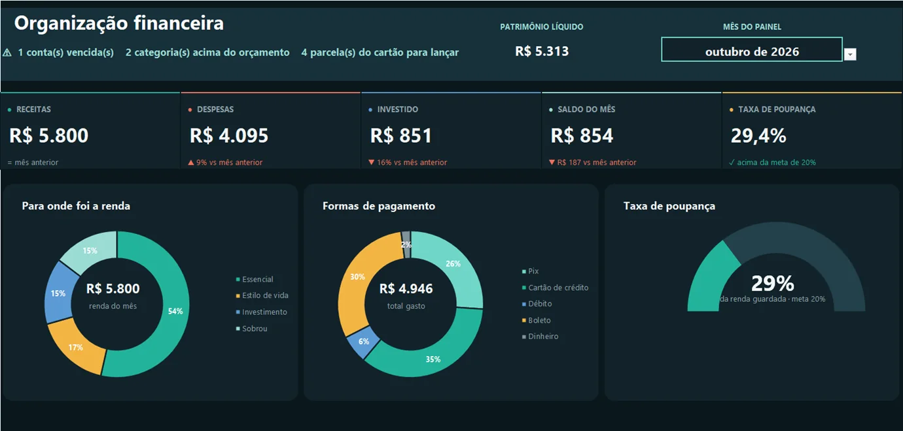
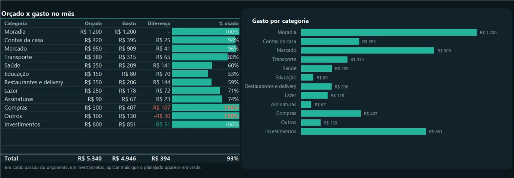
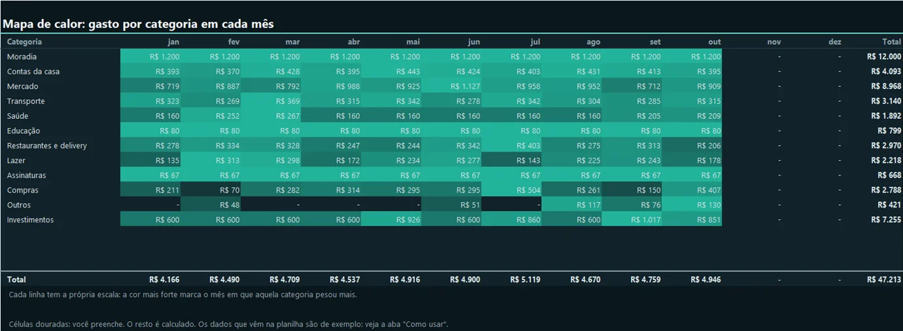
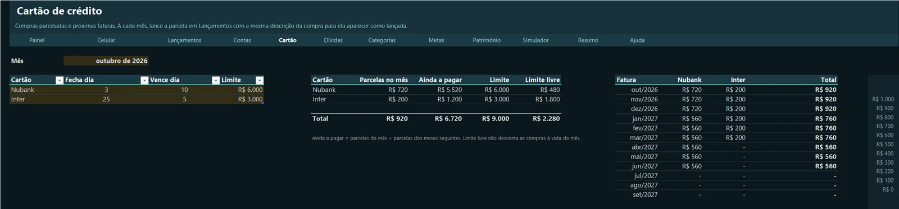
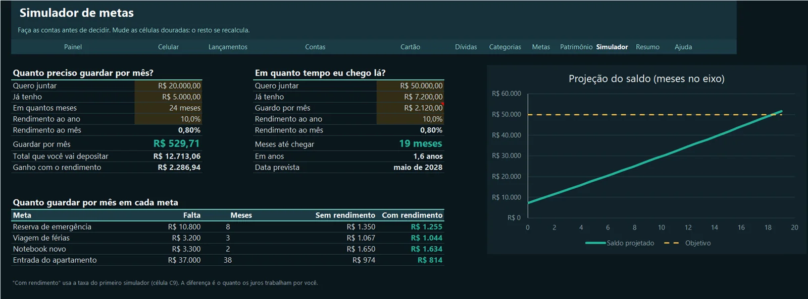
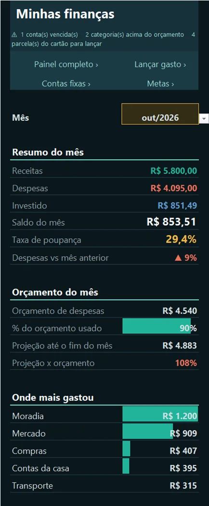
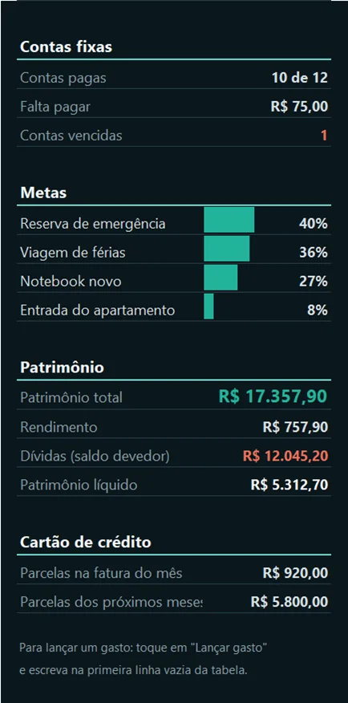

Painel do mês
Receitas, despesas, saldo, taxa de poupança, comparação com o mês anterior e avisos automáticos.
Uma planilha completa para cuidar do próprio dinheiro: você anota o que entra e sai, e ela mostra para onde o dinheiro está indo, avisa o que está atrasado e projeta o fim do mês. Funciona no Excel do computador, no app do celular e tem um relatório pronto no Power BI.
Grátis para uso pessoal. Vem com dados de exemplo para você ver tudo funcionando.

Receitas, despesas, saldo, taxa de poupança, comparação com o mês anterior e avisos automáticos.
Orçado x gasto por categoria, regra 50/30/20 e projeção do gasto até o fim do mês.
Mostra o que já foi pago, o que está pendente e o que venceu, conferindo os lançamentos.
Descobre em que fatura cada parcela cai e mostra as próximas 12 faturas e o limite livre.
Saldo devedor com juros, quanto economiza quitando hoje e o peso das parcelas na renda.
Quanto guardar por mês, em quanto tempo você chega lá e o efeito do rendimento.
Onde está o dinheiro, quanto rendeu e o patrimônio líquido (o que tem menos o que deve).
Aba em uma coluna só, pensada para o app do Excel, com atalhos para lançar na hora.






Com a planilha no OneDrive, o app gratuito do Excel abre a aba Celular : o resumo do mês, o orçamento, as contas, as metas e o patrimônio em uma coluna só. Dá para lançar um gasto na fila do caixa.
Em vez de montar à mão, a planilha inteira é gerada por um script em PowerShell que controla o Excel: abas, tabelas, fórmulas, formatação condicional, gráficos e o tema escuro. Assim dá para refazer tudo em minutos depois de qualquer ajuste.
O relatório do Power BI também é gerado por script (Node.js), no formato de projeto do Power BI: modelo de dados com calendário, relacionamentos e 49 medidas DAX, e 7 páginas validadas contra os esquemas oficiais. O guia de uso é uma página HTML convertida em PDF.